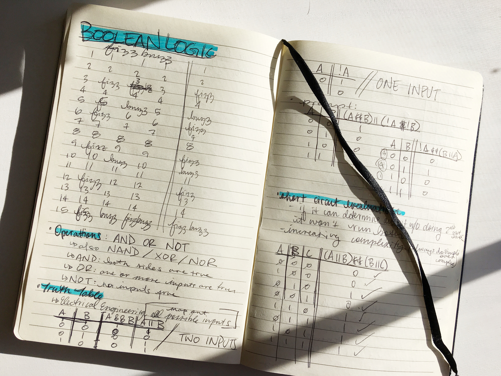

Module One and Boolean Logic
Module one at Turing feels like a cannonball into cold pool. It’s disorienting, exhilarating and a little terrifying. If the adrenaline rush of jumping with both feet suits you, though, you’re more than ready to make the jump a second time.

In truth, the cannonball metaphor only takes us so far. The most important part of Mod1 isn’t really the initial plunge; it’s the need to stay afloat and excited about experimenting with the new tools that are constantly being handed to you.
I enjoyed this crazy plunge into new waters, but what kept me going was the desire to persevere through the challenges that mounted through the session. I used the same problem solving techniques that I learned in my previous life as a theatre technician. If I didn’t know how to do something, I looked around at the tools that I did have and found a way to make them work.
The tool that I pulled out most frequently, though was a good, old-fashioned boolean operator. I had a difficult time implementing flow control with confidence when I first started. I used if statements like they were the bluntest tool in my kit. My programs were full of long, rambling conditionals that made little sense but allowed the equally weak tests I had written to pass.
My messy conditionals were trying to take huge problems and solve them all at once. I was creating Rube Goldberg Machines out of booleans that were unpredictable and unstable, leaving me with my fingers crossed every time I ran my tests.
A lesson on truth tables helped me to crystalize my understanding of the simple true/false. I was missing that simplicity and so were my programs. Truth tables are used to map out conditionals and their expected output, which is always true or false. With each possibility written out, I could see that a complicated conditional was really made up of small checks that confirmed or negated each other. Breaking the complexity of my program into small pieces that could each be checked individually, I could complete control over the flow of my program.
Jumping in from high up can be a great way to start a project. However, Mod1 showed me that huge, imposing problems are best understood as a collection of small ones that can be easily solved. After that plunge, the best way to move forward is to start swimming.